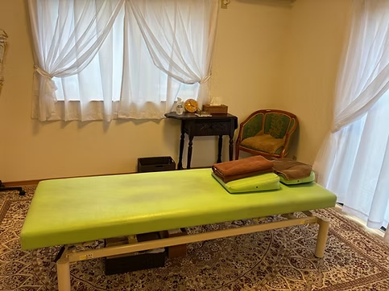
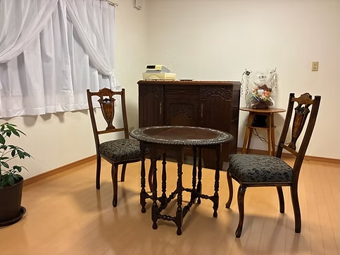

整体院 左駒良
SAKURA
動画モックアップ
v8 一般広告フロー（HOOK→悩み→来店→カウンセリング→施術→ハッピーエンド）
尺：
15秒
（HOOK 2＋圧 4＋After 3＋English 2＋CTA 4）
カット数：
9
（HOOK・悩み・来店・カウンセリング・施術4・ハッピーエンド・CTA）
画角：
1:1 メイン＋16:9 バックアップ
ナレ：
なし（音楽＋テロップ）
HOOK
BEFORE
圧
AFTER
English
CTA
📝 v7→v8：一般的な広告フロー（5段階）へ再構成
「気持ちよさそうHOOK → 悩み → 来店してカウンセリング → 施術 → ハッピーエンド」という整体院広告の鉄板フローに組み直しました。
PDFヒアリングのターゲット記載に従い、
男性（現場仕事疲労層）
を主軸に、
女性（30代半ば病院勤務系・上品層）
を差し替え候補として両方包摂しています。
来店・カウンセリング・ハッピーエンドの3シーンを新規追加。多部位圧モンタージュはv7から継続。
🎬 v8 一般フロー（15秒）
HOOK（0-2s）：気持ちよさそう
— 服越し圧で「気持ちよさそう」を即提示
悩み（2-4s）
— デスク疲れの男性「全身、ガチガチ。」
来店（4-5s）
— 男性が店舗の扉をくぐる
カウンセリング（5-6s）
— アンティーク調テーブルで相談
施術（6-11s）
— 4部位モンタージュ（肩→腰→お尻〜大腿→ふくらはぎ）
ハッピーエンド（11-13s）
— 帰り道で空を仰いで深呼吸「ぜんぶ、軽い。」
CTA（13-15s）
— エンドカード
📷 受領済み 実店舗写真（このイメージに沿って生成）

施術室・ライムグリーンベッド

カウンセリング/待合スペース
※ 本ページはモックアップ（静止画ベース・正方形プレビュー）。実際の納品は動画化＋テロップ焼き＋BGM合成を経た 1:1 + 16:9 のMP4 2版になります。
📽 シーン構成 全6カット（15秒・1:1正方形プレビュー）
① HOOK 気持ちよさそう
0:00–0:02
左縦書き白：千葉県富里市の本格マッサージ整体院
右縦書き赤強調：
そのカラダの疲れ
気持ちよさそうに服越しの圧をかけられている男性。冒頭2秒で「気持ちよさそう」を直接見せる。
▶ 押し込みでわずかな深まり
② 悩み 全身疲労
0:02–0:04
全身、ガチガチ。
30-40代男性が自宅デスクで首を抑える。ターゲットの悩み代弁。
▶ 首を押さえて溜息
③ 来店
0:04–0:05
（テロップなし）
同じ男性が店舗の扉をくぐる後ろ姿。家庭的な入口・暖色の灯り。
▶ 一礼して入店
④ カウンセリング
0:05–0:06
まずは、丁寧に。
アンティーク調のラウンドテーブルで相談する男性。クリップボードを持つ施術者の手のみ。
▶ 手振り解説
⑤a 施術 肩甲骨
0:06–0:07
圧で、効く。
服越しに肩甲骨へ両手圧。モンタージュ1/4。
▶ 押し込み
⑤b 施術 腰
0:07–0:08
（テロップ継続）
腰部へ両手圧。モンタージュ2/4。
▶ 押し込み
⑤c 施術 お尻〜大腿
0:08–0:09
（テロップ継続）
坐骨周辺へ圧。モンタージュ3/4。立ち仕事疲れに効く部位。
▶ 押し込み
⑤d 施術 ふくらはぎ
0:09–0:10
（テロップ継続）
ふくらはぎを両手で揉む。モンタージュ4/4で全身対応を完成。
▶ 揉み込み
⑥ ハッピーエンド
0:10–0:13
ぜんぶ、軽い。
施術後、店外で空を仰いで深呼吸する男性。肩が下がりほどけた姿。
▶ 深呼吸・空を仰ぐ
⑦ CTA エンドカード
0:13–0:15
MASSAGE / English OK.
整体院 左駒良 SAKURA
TEL 070-3820-1102
千葉県富里市七栄502-13
★要確認
HP QR
余白広めの上品背景にロゴ＋連絡情報＋QRを後合成。MASSAGE/English OKもここで明示。
▶ ロゴふわっと
🔄 女性主役版の差し替え候補（30代半ば・上品系）
PDFヒアリング「ほしいお客さんは30代半ば以降女性（病院勤務など、お金に余裕のある層）」を反映した差替候補。
① HOOK 気持ちよさそう（女性）
差替候補
長袖ベージュ＋レギンス。ライムグリーンベッド・アンティーク内装。
② 悩み（女性）
差替候補
デスク前30代女性の後ろ姿。
④ カウンセリング（女性）
差替候補
上品な30代半ばの女性がアンティーク調テーブルで相談。
⑤ 施術（女性）
差替候補
服越しの圧。長袖ベージュトップス。
⑥ ハッピーエンド（女性）
差替候補
夕方の柔らかい光の中、肩がほどけた解放感。
🔥 参考リファレンス（2026-06-02確認）
Meta広告ライブラリ「冒頭フック参考」（★主参考・2026-06-02確認済）
OGAWA FACTORY（大阪西区）
「大阪市西区北堀江/四ツ橋駅徒歩3分」+「慢性症状改善整体」上テロップ。施術中の画から開始
エステ系
「3ヶ月後に挙式を控える私」一人称悩みフック。施術ベッドの女性
RUFFREE 肩甲骨特化型
「全国9店舗・肩甲骨特化型整体院」+「がんばってるのに」感情フック
SALUS 鍼灸整体（青森八戸）
左縦書き「青森県八戸市にある/女性向け整体サロン」+ 右縦書き赤「そのツライ/首コリ肩コリ」★最も近いフォーマット
Meta広告ライブラリ「今配信中」リアルタイム検索
「整体院」で検索
配信中のIG/FB広告がリアルタイム表示
「マッサージ」で検索
マッサージ系の動画広告
「小顔矯正」で検索
小顔矯正の競合広告
YouTube・補助参考（生存確認済）
大阪 ボキボキ整体 肩こり改善
ビフォーアフター3段構造（ボキボキ描写は除外、構造のみ採用）
外国人が日本の整体に感動
英字テロップの入れ方
【今回モックで仮置きさせていただいた点】
店舗住所の番地
：PDF=502-13／文中=802-13 →
★要確認
尺
：15秒で仮置き（30秒版v2も並行希望あれば追加可能）
画角
：1:1メイン＋16:9バックアップ（9:16縦も希望あれば追加）
キャッチコピー
：「肩、もう限界。」「圧で、効く。」「軽い。」
BGM
：シネマティック癒し系（BPM80-95）
CTA
：電話＋住所＋HP QR（Instagram・LINE希望あれば差し替え）
「MASSAGE」位置
：HOOK同時＋CTA併記
Meta広告ライブラリ調査
：ディレクションまでに「今配信中」の競合広告を3-5本ピックアップして次稿反映
【v1→v6 変遷】
v1 上品サロン路線
（30秒・Re.Ra.Ku/ラフィネCM参考）→ フックが弱いとのFB
v2 ビフォーアフター×悩み代弁
（30秒・整体院YouTube参考）→ もっと短尺＋IG広告参考も欲しいとのFB
v3 15秒・IG広告ネイティブ
（IG/TikTok参考拡充）→ Meta広告4本ダウンロード分析後、もっと「気持ちよさそう・大きく圧」が良いとのFB
v4 気持ちよさそう × 大きく圧
（SALUS型フォーマット踏襲）→ 服着用タイプ＆実内装反映へのFB
v5 服着用 × 実内装反映
（HOOK服着用・ライムグリーンベッド・アンティーク内装）→ 圧シーンが裸／男性も入れて欲しいとのFB
v6 全シーン服着用 × 男性主役
（服越し圧に差替・BEFORE/AFTER男性版新規・女性版は差替候補として残置）→ 肩こり一点に絞りすぎとのFB
v7 全身対応・多部位圧モンタージュ
（HOOK部位フリー化・圧4部位モンタージュ・AFTERぜんぶ軽い）→ 流れを一般的な広告構成（HOOK→悩み→来店→カウンセリング→施術→ハッピーエンド）にしてほしいFB
v8 一般広告フロー
（7段階構成・来店/カウンセリング/ハッピーエンド新規・男性主役×女性主役並列）